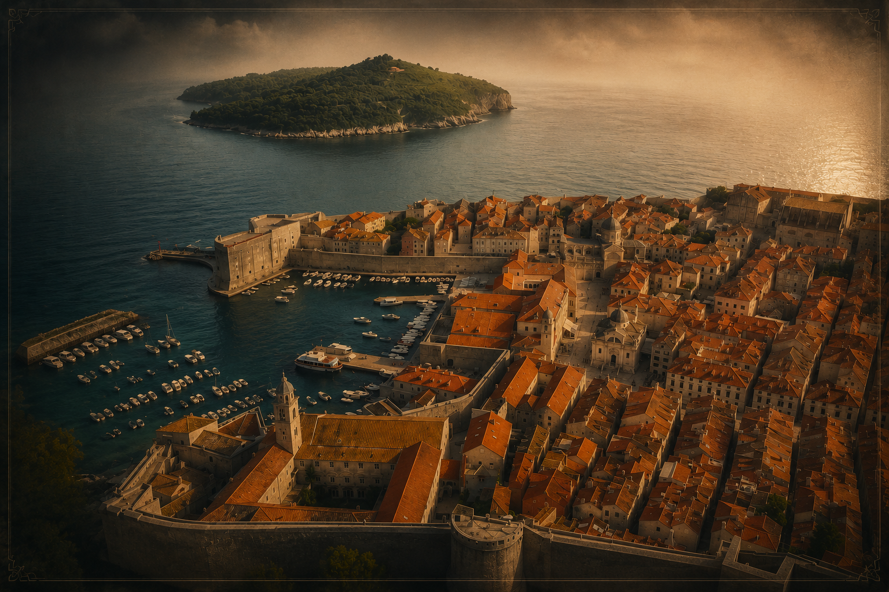

ISTRAŽI GRAD
DUBROVNIK KROZ ŠAH
Klikni na lokaciju i otkrij priču

LOKRUM
1192. — Richard Lavlje Srce
♚
ALJEHIN 1936.
Simultanka — 33 pobjede
♙
GRADSKA KAVANA
Šah iz prkosa 1991.
♜
OLIMPIJADA 1950.
IX. Šahovska olimpijada
♛
ORLANDOV STUP
Kasparov 23.10.1994.
♚
TRIFUNOVIĆEV
DUBROVNIK
Rodio se 1910. u gradu
♞
KNEŽEV DVOR
Ludus Scacchorum — 14. st.
♝
×
OTVORI TAB U POVIJESTI →